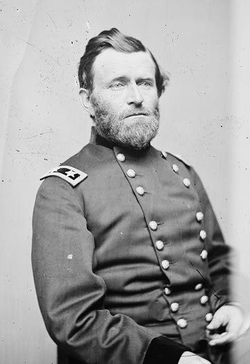
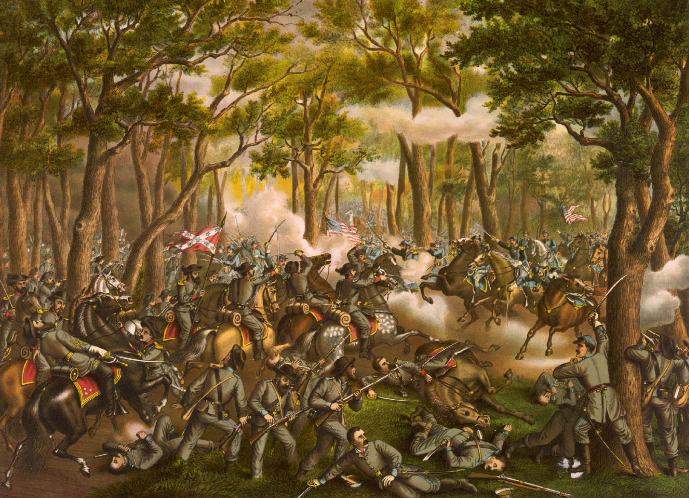

|
The Battle of the Wilderness was fought on May 5 and 6, 1864
in a densely wooded area of the Virginia countryside. This
first clash between the armies of Ulysses S. Grant and
Robert E. Lee in the so-called "Overland Campaign" was a
harbinger of the nonstop fighting and shockingly high
|

Gen. Ulysses S. Grant
|
casualty rates that stunned the American people in the last
year of the war. The Battle of the Wilderness was a bloody
stalemate, but Grant's decision afterwards to fight it out
until the end turned the tide toward Union victory.
The Battle of Wilderness was waged at the same place that
the Battle of Chancellorsville had been fought one year
earlier. The conflict was Grant's first attack on Lee after
having been named commander of all Union armies two months
previously. As the Army of the Potomac approached the
Rapidan River, Grant had four corps. There were three large
infantry corps, and also Philip Sheridan's cavalry corps,
for a total of 118,000 men. Lee had less than half the
number of combat-ready soldiers as Grant, but had the
advantage of being familiar with the roads and rugged
terrain.
On May 4, most of the Army of the Potomac crossed the
Rapidan River without any resistance. Lee had settled on an
attack of Grant's right flank, believing that the Union Army
was not prepared for an assault. The vicious fighting began
along the Orange Plank Road on May 5 and proceeded in a
"fog" as the dense forests made artillery useless and caused
many soldiers to become disoriented.
By nightfall on May 5, the lines of battle stretched for
five miles. Lee ordered General James Longstreet to make a
night march to support General A. P. Hill's men, who were
confronted by a large Union force under the command of
General Winfield Scott Hancock. Longstreet's men arrived
the next morning, just in time to avert Hancock's men from
destroying both Confederate flanks. Longstreet prevented
defeat and halted the Union onslaught, but at the cost of a
large number of casualties. Longstreet was himself wounded
by friendly fire as the Union forces retreated. This slowed
the Confederate pursuit, and allowed the Union army to
reorganize. They quickly confronted Confederate forces under
the command of General Richard H. Anderson. The firefight
that broke out was so intense that logs on Union breastworks
actually caught fire, literally separating the two forces.
Attacks and counterattacks continued through the day on
|

An 1887 print dramatizing the
Battle of the Wilderness.
|
May 6, and made for a bloody field of battle. Near sundown,
Confederate commander Richard Ewell attempted to restart the
offensive by turning the Union right. Though his initial
assault was partially successful, it was not completed due
to nightfall. The battle had ended.
Grant had lost his first confrontation with Lee,
suffering over 17,000 casualties compared to the 8,000
inflicted on the Confederates, but he did not retreat. "At
present we can claim no victory over the enemy," Grant wrote
of the battle, but "neither have they gained a single
advantage." Grant brought up reinforcements and continued to
move the Army of the Potomac, much to their surprise and
delight, in the direction of the Confederate capitol. He
told President Lincoln that, "whatever happens there will be
no turning back." Grant had begun his plan of "total war."
The next stop would be Spotsylvania.
Source: Joan Waugh, ed., Facts on File Encyclopedia of American
History: Civil War and Reconstruction, 1856 to 1869 (New York: Facts on
File, 2003), 395.
|